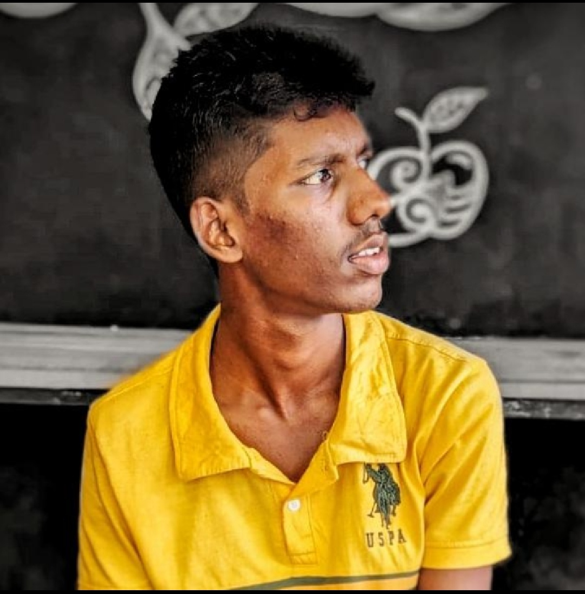

Home
HELLO! Welcome to my website
About ME
Minsara Hasaranga, at just 18 years old, is on an exciting journey toward becoming a software engineer. Living in Hanwella and studying at Hanwella Central College, Minsara is at a pivotal point in life where passion meets opportunity. Growing up in a world increasingly driven by technology, Minsara's interest in software engineering likely stems from a curiosity about how things work behind the scenes. Whether it’s coding, developing apps, or working on innovative projects, the field offers endless possibilities to create and solve problems. As Minsara navigates this path, getting involved in coding clubs or online courses can be incredibly beneficial. Engaging with like-minded peers and mentors can also provide valuable insights and support. Additionally, practical experience through internships or personal projects can help solidify skills and knowledge. The journey to becoming a software engineer is filled with challenges, but with determination and a love for technology, Minsara is sure to make a mark in the field. Whether it's designing user-friendly applications or developing complex systems, the future looks bright!
Contact Numbers
0778001558
0753627605